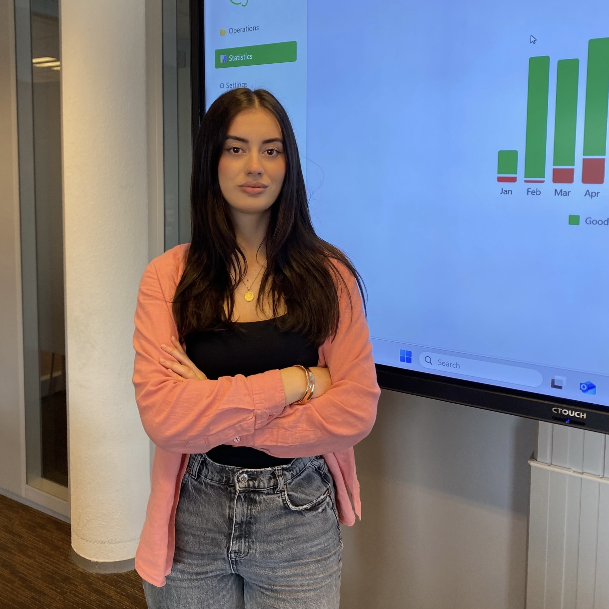

I am Blina Sopjani, a Data Analyst & AI Enthusiast from Kosovo. I turn complex data into clear insights, interactive dashboards, and production-ready machine learning models.
Internships
Repositories
Universities

Combining deep learning expertise with full-stack engineering to deliver end-to-end intelligent systems.
Based in Pristina, Kosovo, I graduated with a BSc in Computer Science from Universum International College, as the top-GPA student in my program, enriched by an Erasmus exchange in Big Data & AI at Inholland University in the Netherlands, and I am now pursuing an MSc in Data Science at Universum.
I currently work as a Data Analyst intern at the Tax Administration of Kosovo (TAK), turning institutional data into reports and insights. Earlier, during my internship at KPN in the Netherlands, I built a YOLO-based computer vision system that automated fiber optic hardware inspections, and at Tectigon LLC I engineered Python pipelines for predictive analytics and executive reporting.
My strength is versatility: from building interactive analytics dashboards with Streamlit, Plotly & Power BI and training machine learning models (ResNet, SVM, Random Forest, KMeans) to architecting secure Java Spring Boot backends with PostgreSQL, I deliver production-grade solutions.
A curated selection of live repositories spanning data analytics, machine learning, and software.
Interactive Streamlit dashboard turning raw restaurant sales logs into revenue, menu, staff, and peak-hour insights with Plotly visualizations.
Team platform with an automated cleaning pipeline and RFM customer segmentation across 8 segments, each mapped to actionable business recommendations.
Exploratory analysis of the UCI Online Retail II dataset: data cleaning, sales trends, and customer behavior across 2009 to 2011 transactions.
Exploration of global happiness drivers like GDP, social support, and freedom, with Linear Regression predictions and KMeans country clustering.
Team hackathon app that unifies scattered open data to rank regions by property prices and scan 38 municipalities for investment and business opportunities.
Data analysis notebook extracting business intelligence and sales forecasting insights using Pandas and visual libraries.
Production computer vision system built at KPN using YOLO to automatically validate fiber optic hardware installations in the field.
Deep learning pipeline classifying intracranial aneurysms from CTA brain scan sequences using convolutional neural networks.
Random Forest classifier scoring academic profiles to predict student dropout risk, deployed as a lightweight REST endpoint.
Real-time skeleton tracking using MediaPipe and SVM classifiers to translate finger gestures into system commands.
NLP pipeline using TF-IDF vectorization and Logistic Regression to automatically categorize unstructured documents.
Secure enterprise backend for a streaming platform built with Java Spring Boot, Hibernate ORM, and PostgreSQL.
React Native mobile app integrating utility tracking and predictive projections for household energy optimization.
Console banking system in Java with account management, deposits, withdrawals, and balance tracking.
Python project that generates a digital CV from structured data.
Chessboard knight pathfinding implemented with breadth-first and depth-first search in C#.
C# application that reads, parses, and processes person records from structured input.
C# mini-project that calculates employee salaries and payroll figures.
Python tool that generates custom QR codes from text or URLs.
Calculator application in Python covering the core arithmetic operations.
Responsive taxi-service landing page built with HTML and CSS.
This portfolio site, built from scratch with vanilla HTML, CSS, and JavaScript.
Real-world impact across AI, data science, and full-stack development.
Analyzing institutional datasets and building reports that support data-driven decision-making within the tax administration.
Turned sales and operations data into dashboards and insights to guide inventory and strategy decisions.
Managed project lifecycles, coordinated remote team operations, and oversaw strategic planning.
Automated data extraction workflows and built predictive ML models for trend forecasting. Designed executive reports using Power BI.
Taught programming fundamentals, algorithms, and logical problem-solving, reinforcing clean coding practices across student cohorts.
Developed an automated FTU installation validation system using YOLO object detection, drastically reducing manual inspection overhead.
Built backend Java applications and web interfaces integrating frontend HTML/JS with database endpoints for client projects.
Formal education and specialized industry training.